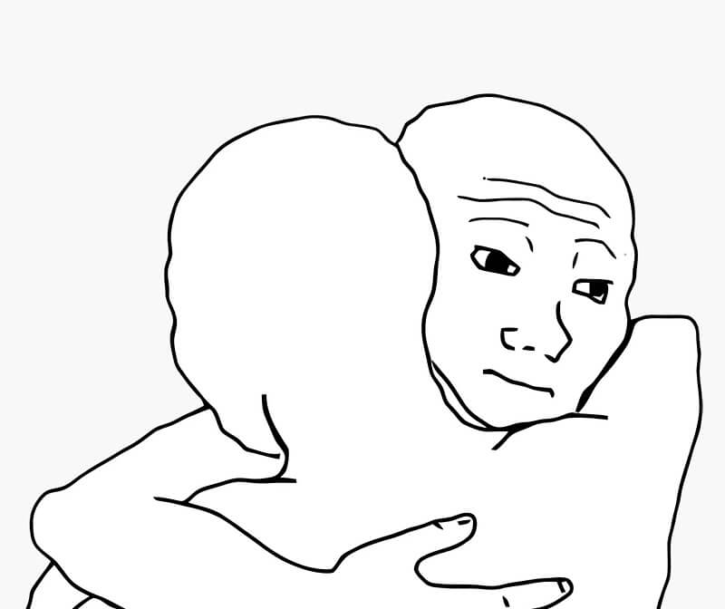

To All My People Who Are Currently In-Between Holes: I Feel You
There is a specific form of torture reserved exclusively for us, watch enthusiasts. It isn't 4:30 date or a bezel that doesn't align perfectly. It is the "In-Between Hole". You know exactly what I’m talking about. It doesn’t matter if you throw on a nato, a leather, or a chunky rubber strap. It is always an either-or situation. It's either too tight or too loose.
 Nenad Pantelic • June 30, 2025
Nenad Pantelic • June 30, 2025

You put a watch on, and you are immediately have two choices.
Choice 1: The Squeeze
The watch sits tight against the wrist. It looks great in photos. But within 20 minutes, your hand starts to tingle. The spring bars squeak and might pop out.
Choice 2: The Gap
You release the buckle to the very next hole. Ah, freedom. But wait. Now there is a 4mm gap between the strap and your skin. The watch head immediately flops over to the far side of my wrist. Every time you raise your arm to check the time the watch slides down.
There is no middle ground. There is only pain or chaos.
"To everyone stuck in-between holes right now: I feel your pain" 🤗
I have tried to fix this. I have bought the rotary hole puncher.
Do you know what happens when you punch a hole between two other holes that are only 7mm apart?
You create one giant, ugly, asymmetrical mega-hole.
So this is my plea to strap manufacturers: Stop spacing holes 7mm apart. Give us finer adjustment increments. We are just people with specific wrist shapes. Or wrists that simply fluctuate in size depending on the humidity and our sodium intake.
Until then, to everyone stuck in-between holes right now: Just know that somewhere, I'm adjusting mine for the tenth time today. We're in this together.